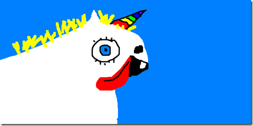
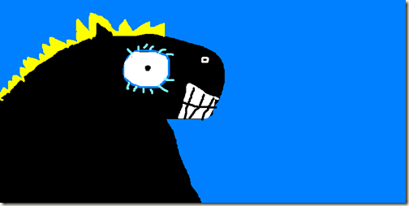
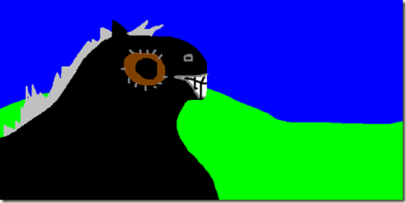

Jealous Horse Loses Eye, Rainbow Horn Unicorn to Blame

{kind=link}

A unicorn is a wonderful thing. The very best unicorns have rainbow horns and like to drive around in cars and their tongues flap back just like a big dumb dog.
{kind=link}

Some black horses are so surprised to see the unicorn being chauffeured around in cars when they have to walk that their eyes bulge out in surprise.
{kind=link}

The most jealous of horses get so surprised that their eye pops right out of the socket and then they just have a crusty brown hole where their big white eye used to be. Also their blonde mane turns a dirty grey because it is stressful trying to find grass to eat when all you have is a big brown O for an eye.
I like horses. They have shiny teeth.
Related posts

Rainbows In Her Brain Meats
Once again we are graced with a reader's submission from 7 year old Fritzy McGee. Fritzy writes: "Sometimes when I…

Zombie Marlon Marlon Brando Eats Unicorn
Artists rendering of the unreleased final scene from Apocalypse Now where a Zombie Marlon Brando eats a unicorn who simultaneously…

Heat Causes Horses to Foam at the Mouth
I like horses. They have shiny teeth. You can feed them sugar cubes. When it gets real hot they get…

The Moment When a Child Rejects His Mother's Blame
“Ask the Doctor” where readers ask questions of the world renounced general practitioner Dr. Charles V. Fullerton Dear Doctor: My…
Comments